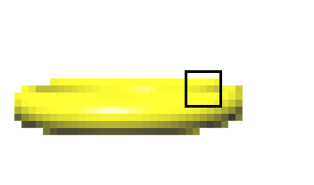

Depth Test
Rendering order no longer matters.


First render the yellow torus. The area appears yellow. Near and far areas are apparent in the depth values.
Rendering order no longer matters.
First render the yellow torus. The area appears yellow. Near and far areas are apparent in the depth values.